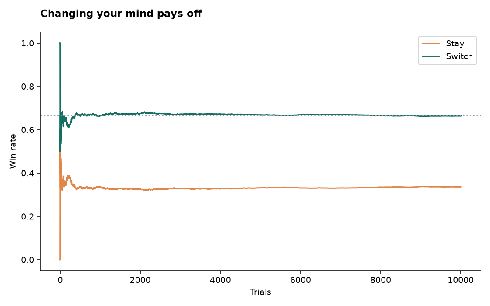
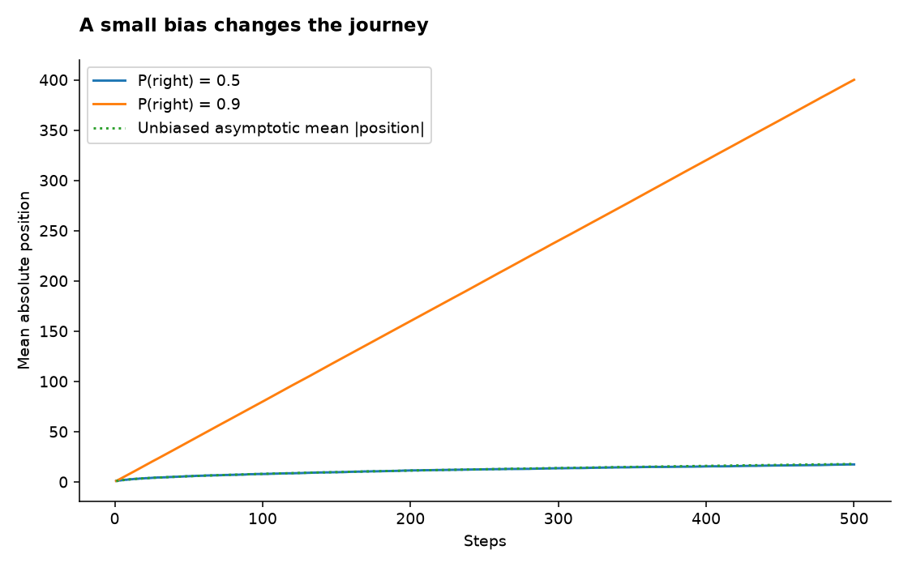
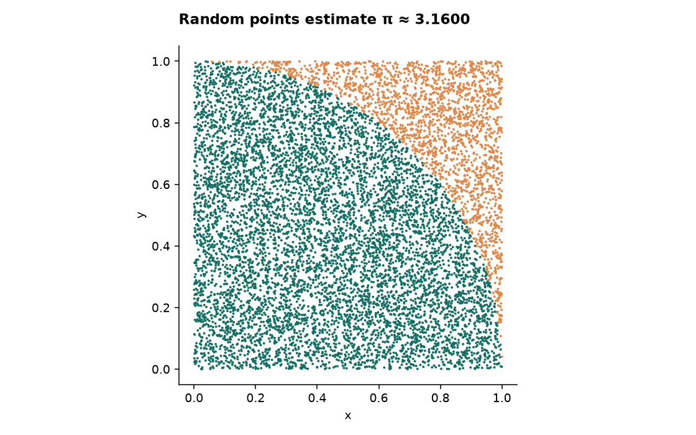
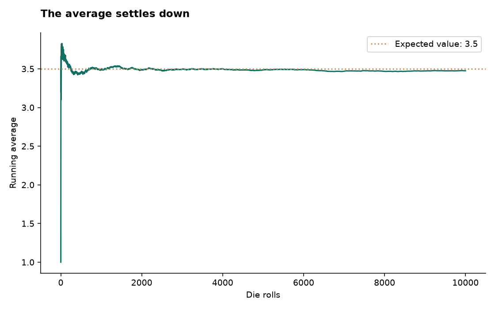
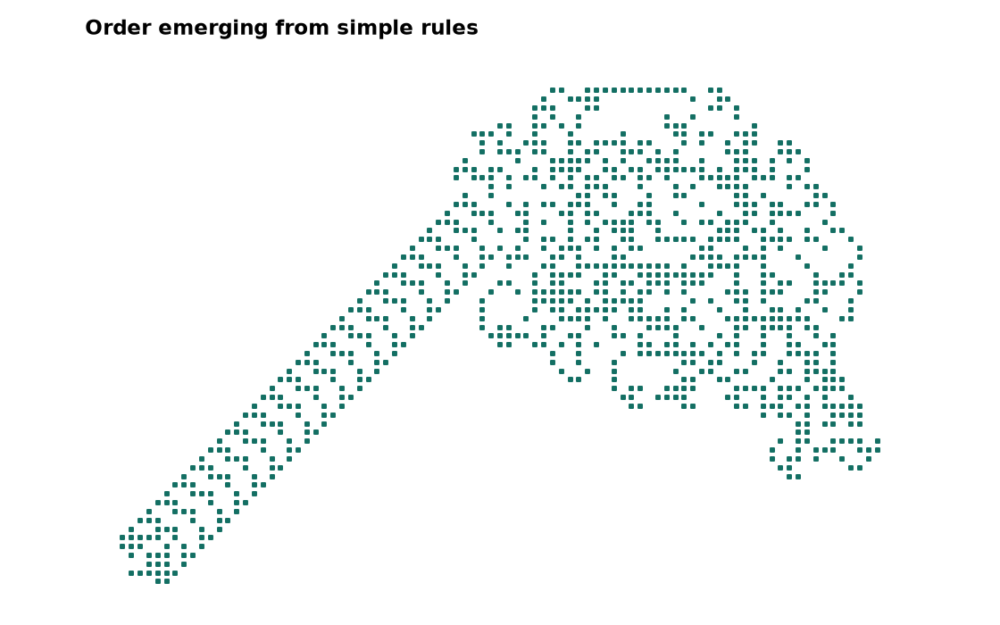
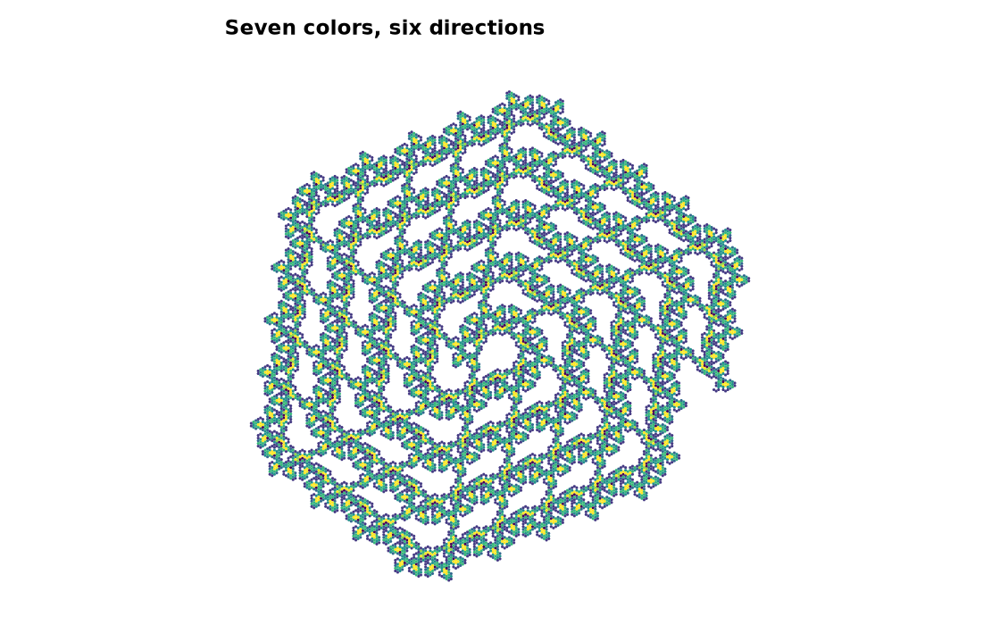

01 / Probability
The Monty Hall problem
Why switching doors wins about two-thirds of the time.
Read the original exercise ↗MODELING & SIMULATION / A COLLECTION BY CHRISTOPHER TANG
Six experiments in chance, movement, and emergence. Explore the results, then reproduce them with seeded Python models.
Explore the experiments ↓
01 / Probability
Why switching doors wins about two-thirds of the time.
Read the original exercise ↗
02 / Stochastic processes
Compare unbiased diffusion with a walk that favors one direction.
Read the original exercise ↗
03 / Monte Carlo
Sample a square. Count the points inside a quarter circle.
Read the original exercise ↗
04 / Convergence
Watch a die’s running average approach its expected value of 3.5.
Read the original exercise ↗
05 / Emergence
A two-state rule creates surprising structure on a square grid.
Read the original exercise ↗
06 / Cellular systems
Explore a seven-color extension on a hexagonal lattice.
Read the original exercise ↗FROM PICTURE TO PROCESS
Every figure above is generated from the numerical models in this repository with seed 42. Original classroom exercises and their source credits are preserved separately.
python -m pip install -r requirements.txt python -m simulations --seed 42Setup, methods & limitations ↗